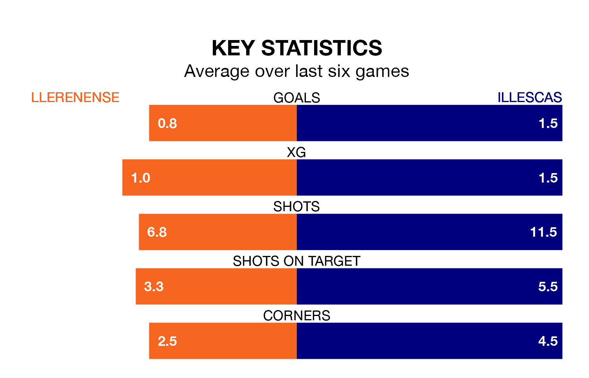

Illescas travel to Llerenense on Saturday in Segunda División RFEF Group 5.
The visitors come into the game on the back of a defeat in their last match, having lost to Montijo 2-1 at home.
Llerenense also lost their last match, 1-0 against Atlético Paso.
With 17 goals in 18 games so far this season, Llerenense are scoring at below the league average rate with 0.9 goals per game. But they are conceding fewer than average too, letting in 18 goals at a rate of 1.0 per game.
Illescas, meanwhile, are above average scorers, with 1.3 goals per game, compared to a league average of 1.1. They have conceded 0.9 goals per game.
The visitors are fifth in the table after 18 games, of which they have won eight and drawn five, earning 29 points.
The home side are three places behind Illescas in eighth, with seven wins and five draws putting them on 26 points.
Llerenense are in reasonable form in Segunda División RFEF Group 5, with three wins and two draws from their last six games.
With three wins and a draw over that period, Illescas's form is slightly worse – they have taken 10 points from 18, compared to Llerenense's 11.
Updated: 14:53 (UTC), 16/01/24